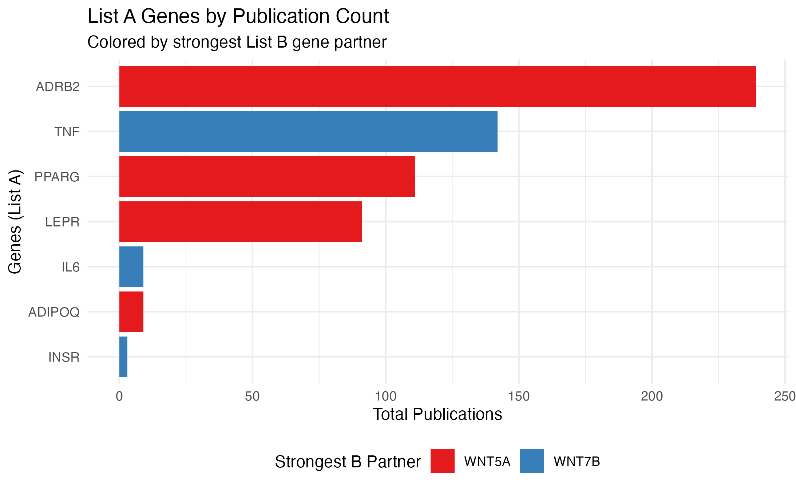
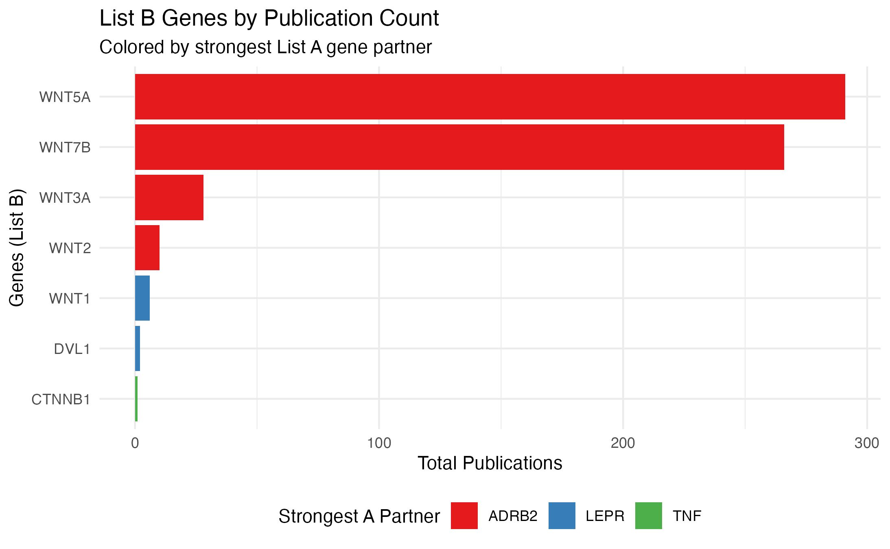
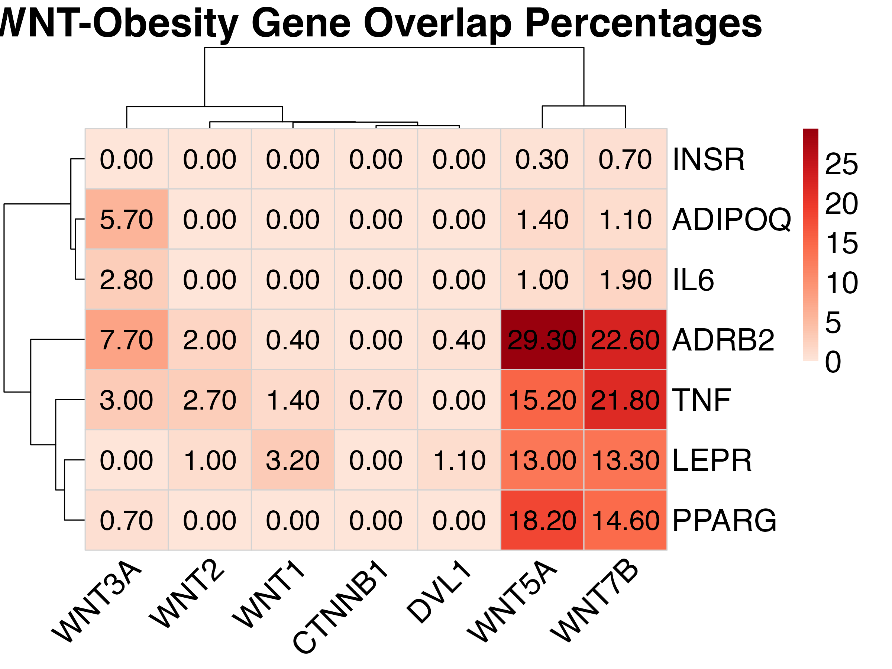
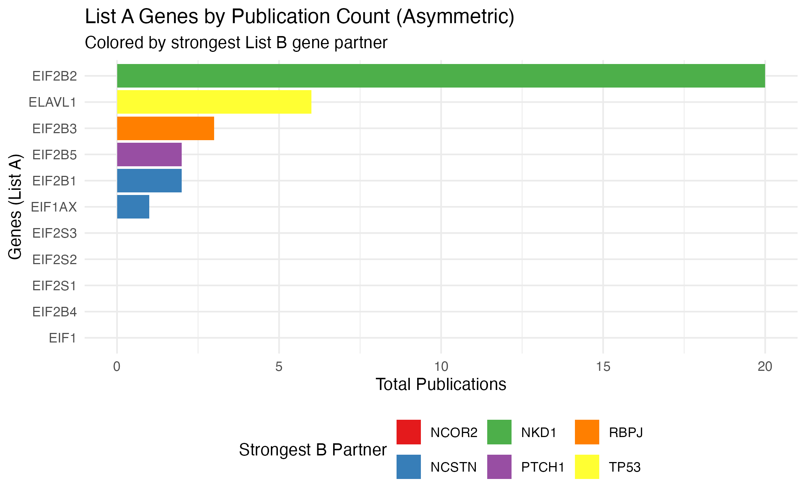
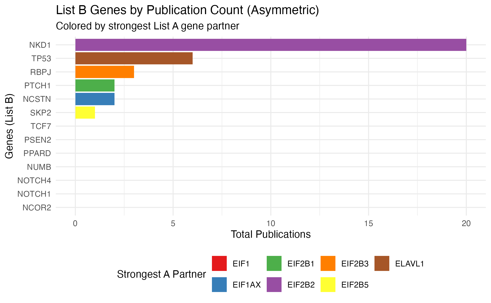
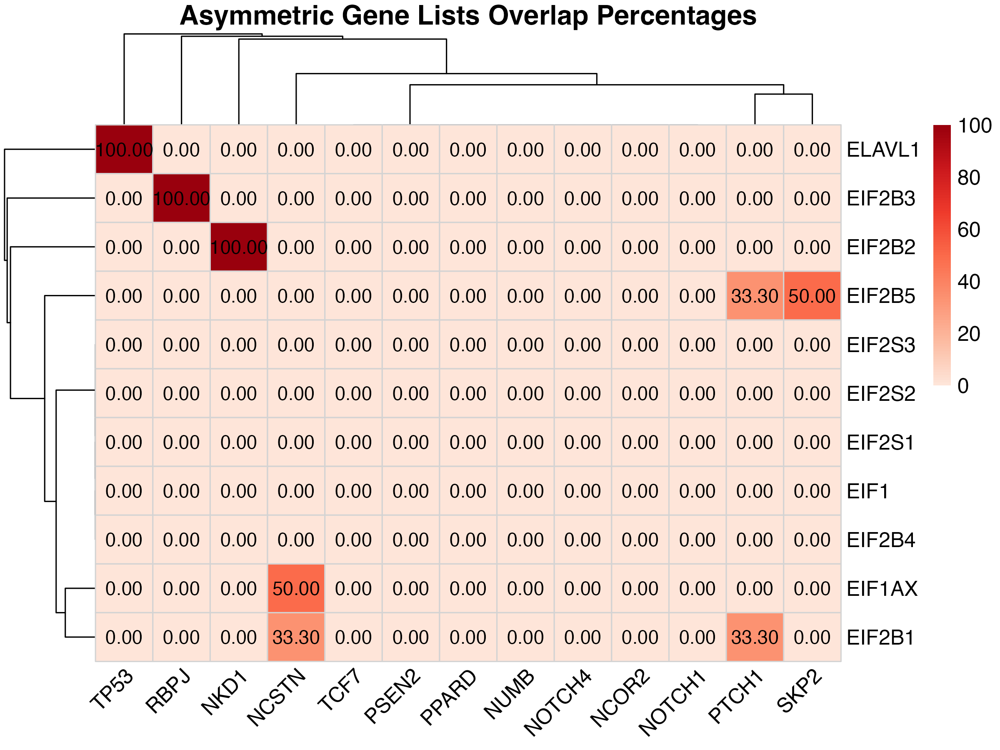
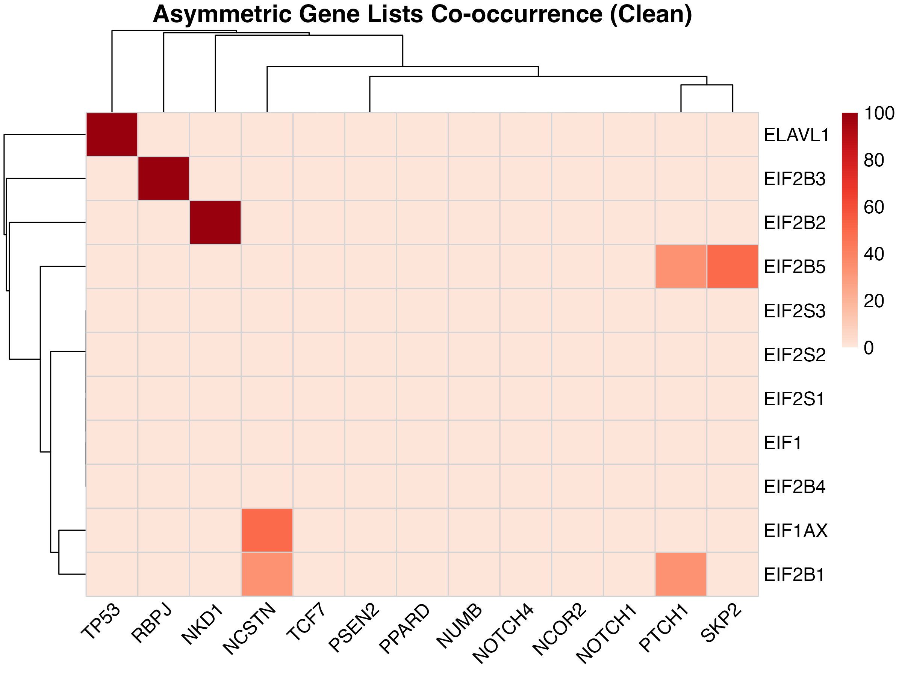

PubMatrixR: Literature Co-occurrence Analysis
A comprehensive guide to analyzing publication relationships
ToledoEM
2025-11-22
Source:vignettes/vignette.Rmd
vignette.Rmd
library(PubMatrixR)
library(knitr)
library(kableExtra)
library(dplyr)
library(msigdf)
library(pheatmap)
library(ggplot2)Introduction
PubMatrixR is an R package designed to analyze literature co-occurrence patterns by systematically searching PubMed and PMC databases. This vignette demonstrates how to:
- Create co-occurrence matrices from literature searches
- Visualize results using custom heatmaps with overlap percentage clustering
- Work with gene sets from MSigDB
- Create bar plots showing publication patterns by gene
- Export results for further analysis
Acknowledgments
This package is a fork of the original PubMatrixR by tslaird. Our gratitude to the original author.
NCBI API Key (Recommended)
For better performance and higher rate limits, we recommend obtaining an NCBI API key:
- Without API key: 3 requests per second
- With API key: 10 requests per second
To obtain your free NCBI API key, visit: https://support.nlm.nih.gov/kbArticle/?pn=KA-05317
Once you have your API key, you can use it in PubMatrixR like this:
result <- PubMatrix(
A = gene_set_1,
B = gene_set_2,
API.key = "your_api_key_here",
Database = "pubmed"
)Preparing Gene Sets
Making the gene lists from MSigDB
For this example, we’ll extract genes related to WNT signaling and obesity from the MSigDB database:
# Extract WNT-related genes
A <- msigdf::msigdf.human %>%
dplyr::filter(grepl(geneset, pattern = "wnt", ignore.case = TRUE)) %>%
dplyr::pull(symbol) %>%
unique()
# Extract obesity-related genes
B <- msigdf::msigdf.human %>%
dplyr::filter(grepl(geneset, pattern = "obesity", ignore.case = TRUE)) %>%
dplyr::pull(symbol) %>%
unique()
# Sample genes for demonstration (making them equal in length)
A <- sample(A, 10, replace = FALSE)
B <- sample(B, 10, replace = FALSE)Literature Analysis
Results Table
The co-occurrence matrix shows the number of publications mentioning each pair of genes:
kable(result,
caption = "Co-occurrence Matrix: WNT Genes vs Obesity Genes (Publication Counts)",
align = "c",
format = "html"
) %>%
kableExtra::kable_styling(
bootstrap_options = c("striped", "hover", "condensed"),
full_width = FALSE,
position = "center"
) %>%
kableExtra::add_header_above(c(" " = 1, "Obesity Genes" = length(B)))| WNT1 | WNT2 | WNT3A | WNT5A | WNT7B | CTNNB1 | DVL1 | |
|---|---|---|---|---|---|---|---|
| LEPR | 3 | 1 | 0 | 44 | 42 | 0 | 1 |
| ADIPOQ | 0 | 0 | 2 | 4 | 3 | 0 | 0 |
| PPARG | 0 | 0 | 1 | 62 | 48 | 0 | 0 |
| TNF | 2 | 4 | 5 | 57 | 73 | 1 | 0 |
| IL6 | 0 | 0 | 1 | 3 | 5 | 0 | 0 |
| ADRB2 | 1 | 5 | 19 | 120 | 93 | 0 | 1 |
| INSR | 0 | 0 | 0 | 1 | 2 | 0 | 0 |
Visualization
Publication Count Bar Plots
Let’s first examine which genes have the highest publication counts:
# Create data frame for List A genes (rows) colored by List B genes (columns)
a_genes_data <- data.frame(
gene = rownames(result),
total_pubs = rowSums(result),
stringsAsFactors = FALSE
)
# Add color coding based on max overlap with B genes
a_genes_data$max_b_gene <- apply(result, 1, function(x) colnames(result)[which.max(x)])
a_genes_data$max_overlap <- apply(result, 1, max)
# Create data frame for List B genes (columns) colored by List A genes (rows)
b_genes_data <- data.frame(
gene = colnames(result),
total_pubs = colSums(result),
stringsAsFactors = FALSE
)
# Add color coding based on max overlap with A genes
b_genes_data$max_a_gene <- apply(result, 2, function(x) rownames(result)[which.max(x)])
b_genes_data$max_overlap <- apply(result, 2, max)
# Plot A genes colored by their strongest B gene partner
p1 <- ggplot(a_genes_data, aes(x = reorder(gene, total_pubs), y = total_pubs, fill = max_b_gene)) +
geom_bar(stat = "identity") +
coord_flip() +
labs(
title = "List A Genes by Publication Count",
subtitle = "Colored by strongest List B gene partner",
x = "Genes (List A)",
y = "Total Publications",
fill = "Strongest B Partner"
) +
theme_minimal() +
theme(legend.position = "bottom") +
scale_fill_brewer(palette = "Set1")
# Plot B genes colored by their strongest A gene partner
p2 <- ggplot(b_genes_data, aes(x = reorder(gene, total_pubs), y = total_pubs, fill = max_a_gene)) +
geom_bar(stat = "identity") +
coord_flip() +
labs(
title = "List B Genes by Publication Count",
subtitle = "Colored by strongest List A gene partner",
x = "Genes (List B)",
y = "Total Publications",
fill = "Strongest A Partner"
) +
theme_minimal() +
theme(legend.position = "bottom") +
scale_fill_brewer(palette = "Set1")
print(p1)
print(p2)
Heatmap with Overlap Percentages
The heatmap displays overlap percentages calculated from the publication co-occurrence counts:
plot_pubmatrix_heatmap(result,
title = "WNT-Obesity Gene Overlap Percentages",
show_numbers = TRUE,
width = 12,
height = 10
)
Overlap percentage heatmap with values displayed in each cell
Clean Heatmap
For a cleaner visualization without numbers, useful for presentations:
plot_pubmatrix_heatmap(result,
title = "WNT-Obesity Gene Co-occurrence (Clean)",
show_numbers = FALSE,
width = 12,
height = 10
)Co-occurrence heatmap without numbers for better visual clarity
Asymmetric lists
A <- c("NCOR2", "NCSTN", "NKD1", "NOTCH1", "NOTCH4", "NUMB", "PPARD", "PSEN2", "PTCH1", "RBPJ", "SKP2", "TCF7", "TP53")
B <- c("EIF1", "EIF1AX", "EIF2B1", "EIF2B2", "EIF2B3", "EIF2B4", "EIF2B5", "EIF2S1", "EIF2S2", "EIF2S3", "ELAVL1")
# Run actual PubMatrix analysis
current_year <- format(Sys.Date(), "%Y")
result <- PubMatrix(
A = A,
B = B,
Database = "pubmed",
daterange = c(2020, current_year),
outfile = "pubmatrix_result"
)Results Table
The co-occurrence matrix shows the number of publications mentioning each pair of genes:
kable(result,
caption = "Co-occurrence Matrix: Longer Lists (Publication Counts)",
align = "c",
format = "html"
) %>%
kableExtra::kable_styling(
bootstrap_options = c("striped", "hover", "condensed"),
full_width = FALSE,
position = "center"
) %>%
kableExtra::add_header_above(c(" " = 1, "A Genes" = length(A)))| NCOR2 | NCSTN | NKD1 | NOTCH1 | NOTCH4 | NUMB | PPARD | PSEN2 | PTCH1 | RBPJ | SKP2 | TCF7 | TP53 | |
|---|---|---|---|---|---|---|---|---|---|---|---|---|---|
| EIF1 | 0 | 0 | 0 | 0 | 0 | 0 | 0 | 0 | 0 | 0 | 0 | 0 | 0 |
| EIF1AX | 0 | 1 | 0 | 0 | 0 | 0 | 0 | 0 | 0 | 0 | 0 | 0 | 0 |
| EIF2B1 | 0 | 1 | 0 | 0 | 0 | 0 | 0 | 0 | 1 | 0 | 0 | 0 | 0 |
| EIF2B2 | 0 | 0 | 20 | 0 | 0 | 0 | 0 | 0 | 0 | 0 | 0 | 0 | 0 |
| EIF2B3 | 0 | 0 | 0 | 0 | 0 | 0 | 0 | 0 | 0 | 3 | 0 | 0 | 0 |
| EIF2B4 | 0 | 0 | 0 | 0 | 0 | 0 | 0 | 0 | 0 | 0 | 0 | 0 | 0 |
| EIF2B5 | 0 | 0 | 0 | 0 | 0 | 0 | 0 | 0 | 1 | 0 | 1 | 0 | 0 |
| EIF2S1 | 0 | 0 | 0 | 0 | 0 | 0 | 0 | 0 | 0 | 0 | 0 | 0 | 0 |
| EIF2S2 | 0 | 0 | 0 | 0 | 0 | 0 | 0 | 0 | 0 | 0 | 0 | 0 | 0 |
| EIF2S3 | 0 | 0 | 0 | 0 | 0 | 0 | 0 | 0 | 0 | 0 | 0 | 0 | 0 |
| ELAVL1 | 0 | 0 | 0 | 0 | 0 | 0 | 0 | 0 | 0 | 0 | 0 | 0 | 6 |
Bar Plots for Asymmetric Lists
# Create data frame for List A genes (rows) colored by List B genes (columns)
a_genes_data2 <- data.frame(
gene = rownames(result),
total_pubs = rowSums(result),
stringsAsFactors = FALSE
)
# Add color coding based on max overlap with B genes
a_genes_data2$max_b_gene <- apply(result, 1, function(x) colnames(result)[which.max(x)])
a_genes_data2$max_overlap <- apply(result, 1, max)
# Create data frame for List B genes (columns) colored by List A genes (rows)
b_genes_data2 <- data.frame(
gene = colnames(result),
total_pubs = colSums(result),
stringsAsFactors = FALSE
)
# Add color coding based on max overlap with A genes
b_genes_data2$max_a_gene <- apply(result, 2, function(x) rownames(result)[which.max(x)])
b_genes_data2$max_overlap <- apply(result, 2, max)
# Plot A genes colored by their strongest B gene partner
p3 <- ggplot(a_genes_data2, aes(x = reorder(gene, total_pubs), y = total_pubs, fill = max_b_gene)) +
geom_bar(stat = "identity") +
coord_flip() +
labs(
title = "List A Genes by Publication Count (Asymmetric)",
subtitle = "Colored by strongest List B gene partner",
x = "Genes (List A)",
y = "Total Publications",
fill = "Strongest B Partner"
) +
theme_minimal() +
theme(legend.position = "bottom") +
scale_fill_brewer(palette = "Set1")
# Plot B genes colored by their strongest A gene partner
p4 <- ggplot(b_genes_data2, aes(x = reorder(gene, total_pubs), y = total_pubs, fill = max_a_gene)) +
geom_bar(stat = "identity") +
coord_flip() +
labs(
title = "List B Genes by Publication Count (Asymmetric)",
subtitle = "Colored by strongest List A gene partner",
x = "Genes (List B)",
y = "Total Publications",
fill = "Strongest A Partner"
) +
theme_minimal() +
theme(legend.position = "bottom") +
scale_fill_brewer(palette = "Set1")
print(p3)
print(p4)
Heatmap with Overlap Percentages
The heatmap displays overlap percentages calculated from the publication co-occurrence counts:
plot_pubmatrix_heatmap(result,
title = "Asymmetric Gene Lists Overlap Percentages",
show_numbers = TRUE,
width = 12,
height = 10
)
Overlap percentage heatmap with values displayed in each cell
Clean Heatmap
For a cleaner visualization without numbers, useful for presentations:
plot_pubmatrix_heatmap(result,
title = "Asymmetric Gene Lists Co-occurrence (Clean)",
show_numbers = FALSE,
width = 12,
height = 10
)
Co-occurrence heatmap without numbers for better visual clarity
Summary
This vignette demonstrated:
- Gene Set Preparation: Using MSigDB or manual curation to create meaningful gene lists
- Literature Analysis: Running PubMatrixR to generate co-occurrence matrices
- Data Visualization: Creating publication-ready heatmaps with custom color schemes and bar plots
- Results Interpretation: Understanding co-occurrence patterns in the literature
The resulting matrices and visualizations can help identify: - Strong literature connections between gene sets - Potential research gaps (low co-occurrence pairs) - Patterns in publication trends over time - Most studied genes and their strongest literature partners
System Information
sessionInfo()
#> R version 4.5.2 (2025-10-31)
#> Platform: aarch64-apple-darwin20
#> Running under: macOS Tahoe 26.1
#>
#> Matrix products: default
#> BLAS: /System/Library/Frameworks/Accelerate.framework/Versions/A/Frameworks/vecLib.framework/Versions/A/libBLAS.dylib
#> LAPACK: /Library/Frameworks/R.framework/Versions/4.5-arm64/Resources/lib/libRlapack.dylib; LAPACK version 3.12.1
#>
#> locale:
#> [1] C.UTF-8/C.UTF-8/C.UTF-8/C/C.UTF-8/C.UTF-8
#>
#> time zone: Europe/London
#> tzcode source: internal
#>
#> attached base packages:
#> [1] stats graphics grDevices utils datasets methods base
#>
#> other attached packages:
#> [1] ggplot2_4.0.1 pheatmap_1.0.13 msigdf_2025.1 dplyr_1.1.4
#> [5] kableExtra_1.4.0 knitr_1.50 PubMatrixR_1.0.0
#>
#> loaded via a namespace (and not attached):
#> [1] sass_0.4.10 generics_0.1.4 xml2_1.5.0 stringi_1.8.7
#> [5] digest_0.6.39 magrittr_2.0.4 evaluate_1.0.5 grid_4.5.2
#> [9] RColorBrewer_1.1-3 fastmap_1.2.0 jsonlite_2.0.0 viridisLite_0.4.2
#> [13] scales_1.4.0 pbapply_1.7-4 textshaping_1.0.4 jquerylib_0.1.4
#> [17] cli_3.6.5 rlang_1.1.6 withr_3.0.2 cachem_1.1.0
#> [21] yaml_2.3.10 tools_4.5.2 parallel_4.5.2 curl_7.0.0
#> [25] vctrs_0.6.5 R6_2.6.1 lifecycle_1.0.4 stringr_1.6.0
#> [29] fs_1.6.6 htmlwidgets_1.6.4 ragg_1.5.0 pkgconfig_2.0.3
#> [33] desc_1.4.3 pkgdown_2.2.0 pillar_1.11.1 bslib_0.9.0
#> [37] gtable_0.3.6 glue_1.8.0 systemfonts_1.3.1 xfun_0.54
#> [41] tibble_3.3.0 tidyselect_1.2.1 rstudioapi_0.17.1 farver_2.1.2
#> [45] htmltools_0.5.8.1 labeling_0.4.3 rmarkdown_2.30 svglite_2.2.2
#> [49] compiler_4.5.2 S7_0.2.1